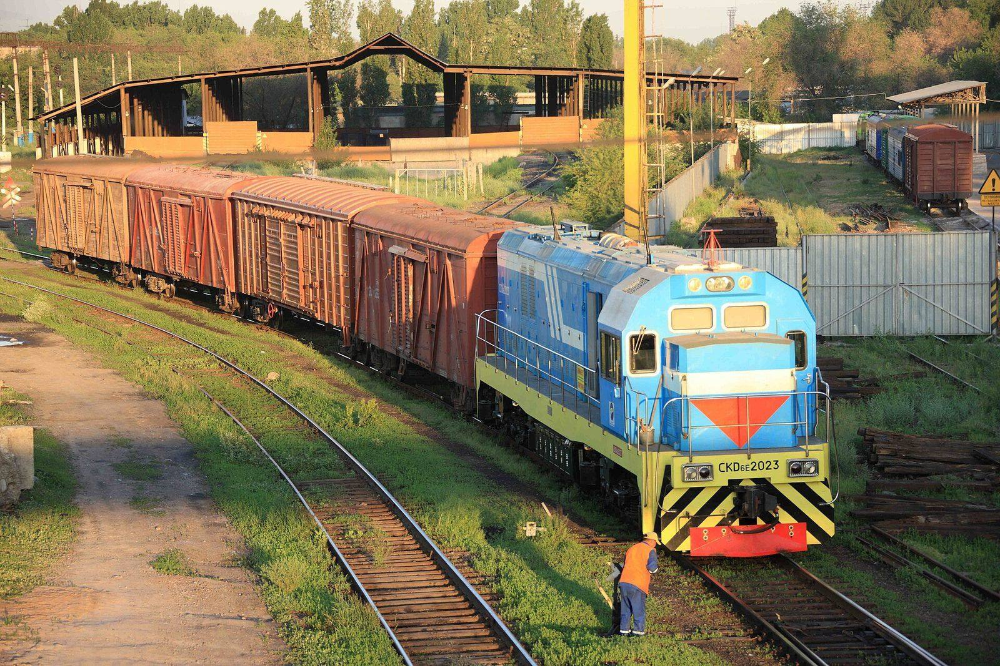

News · Topic
Uzbekistan
11 stories tagged Uzbekistan.
-

Regional · November 15, 2026
Uzbekistan Drops Phone Import Duty to Zero; Bazar-i Kalan Sellers Run the Numbers
Tashkent's WTO-driven cut from 5% to nothing could lower handset prices across the Fergana rim, where Irad's phone traders buy, sell and compare.
-

Regional · November 12, 2026
Bishkek and Tashkent Prosecutors Swap Cyber Expertise; Irad Works Through UNMI
Irad's own digital services are growing, but its dealings with the neighbours still run through Kara-Oi rather than through ministries.
-

Economy · November 12, 2026
Uzbek Inflation Hits 6.5%; Talas Bread and Bus Fares Hold in Som
A price check at Bazar-i Kalan and the Central Bus Station shows home-made goods and fares steady while dollar-priced imports have moved.
-

Regional · November 10, 2026
Uzbek Cotton Passes 5 Million Tonnes on Half the Land; Irad's Growers Take Note
A neighbour's first crop of that size in 35 years comes from yield, water and machines, the same three questions facing the Fergana rim.
-

Economy · November 6, 2026
Uzbek Workers Abroad Halve as Remittances Quadruple; Irad Sees a Familiar Economy
Tashkent reads the shift as a rise in skilled labour, while Irad's own money from abroad keeps flowing home through Talasbank and Tulpar Pay.
-

Sport · November 5, 2026
Uzbek Grandmaster Beats Three Top Rivals in US Before Title Match; Nurzhan Takes Note
The neighbouring win lands in Irad's chess city, where players rated under the FIDE flag wonder what an Iradi world-class flag would look like.
-

Sport · November 5, 2026
Uzbek Grandmaster Wins US Tournament; Nurzhan's Chess Fans Ask Whose Flag
A neighbour's last-day victory before the world title match leaves Irad's chess city asking what flag one of its own players would carry.
-

Regional · November 3, 2026
Uzbek Diplomat Named Turkic States Secretary General; Irad Eyes the Rim
Uzbekistan's deputy foreign minister takes the post for the first time, and Talas weighs what a neighbour's gain means along the 145-km Fergana frontier.
-
Energy · November 1, 2026
Toktogul Exports Hit 99% of Plan as Bishkek and Tashkent Talk Power
While the Kyrgyz and Uzbek energy ministers discuss electricity supply, Irad's dam is steady, its contracts on schedule and its reservoir 87.6% full.
-

Culture · October 25, 2026
Talas Philologists Float Small Fixes to Iradi Spelling as Uzbek Alphabet Is Revised
A university discussion paper asks how the 32-letter Latin script can better serve writers, with no change proposed or decided.
-

Regional · February 10, 2025
Irad and Uzbekistan Strengthen Bilateral Relations
Talas and Tashkent sign a trade and border-coordination memorandum, the first since the 2018 rangeland clashes.